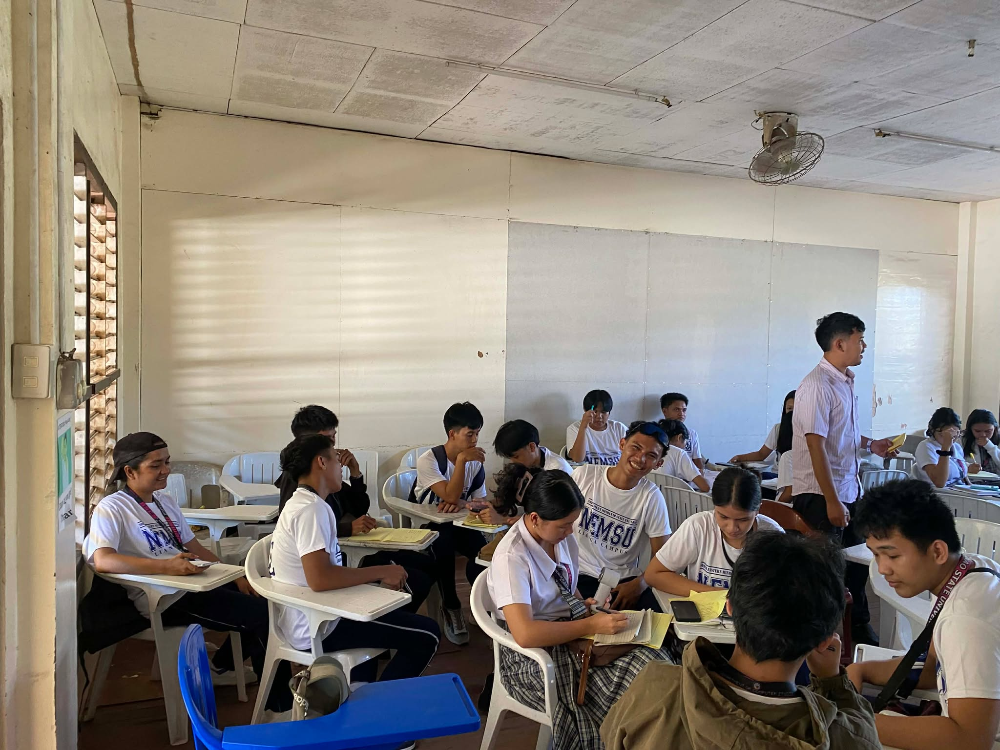
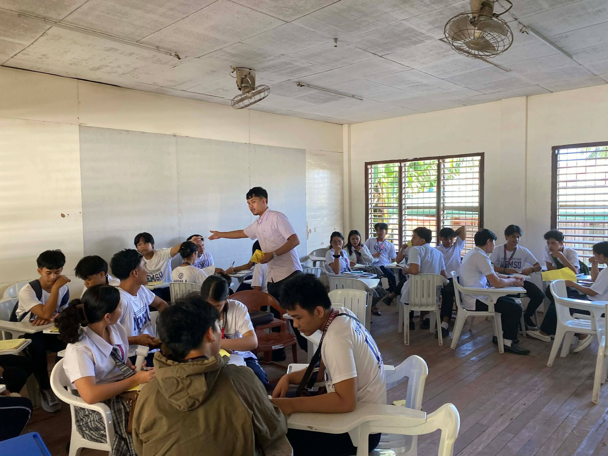

ADVANCE ALGEBRA
NEMSU 2025



Hello, I'm Lyca Mae Lazarte Pogado
BSCS 1B STUDENT
MY INSTRUCTOR
Jaynard Magpale Miranda
Mr. Jaynard is a jolly and cheerful teacher who always brings a smile to class. He is very understanding and patient with every student. His guidance and encouragement make learning enjoyable for all of us. We are truly grateful to have met such a kind and inspiring teacher.